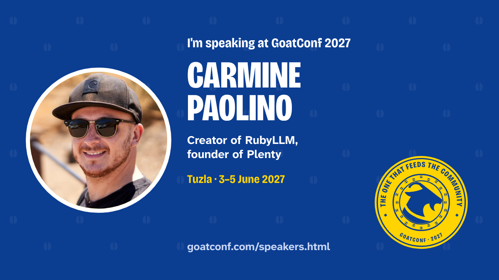
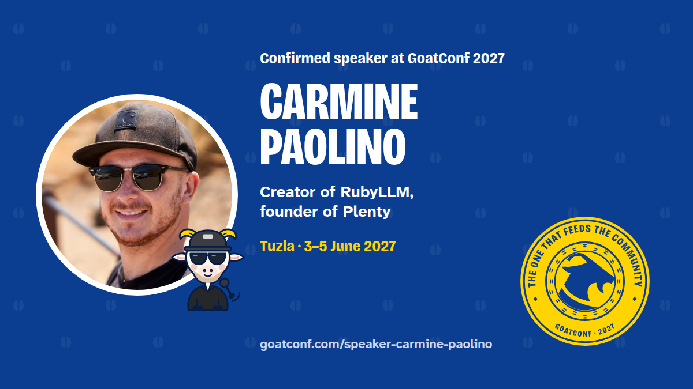

Carmine Paolino
Creator of RubyLLM, founder of PlentySpeaking at GoatConf 2027 in Tuzla.
Who they are

I'm Carmine Paolino, a software engineer, founder, and musician in Berlin. I build products, frameworks, and open-source tools across AI, Ruby, and native desktop software. I run Plenty, the company behind this work.
I created RubyLLM, a framework for building AI applications in Ruby, and build Chat with Work, an AI assistant that connects to your work tools.
Session
The session will be on the program soon.
How to support them
Your card: I'm speaking
Your card, to post as your own: speaking at GoatConf 2027. It links back to the speakers page.



The announcement card
GoatConf 2027's card announcing you, for anyone to post. It links to this page.
